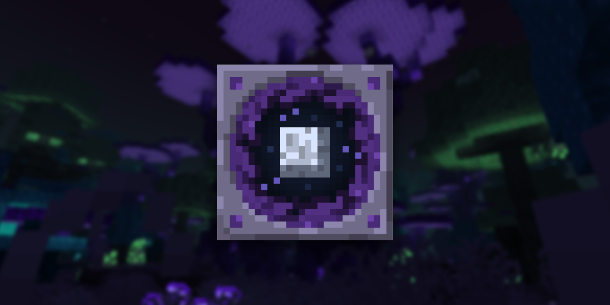

Cryptic Mushroom is a Minecraft modding team led by Cipher Zero X with the goal of making fresh and unique mods-mainly along the theme of dimensions.
Founded in November 2017, we made our best efforts to get on our feet with different projects that didn't work out. In October 2018, we entered MMD's second annual SpookyJam with a brand new idea and new team members and made the earliest alpha version for The Midnight mod.
The Midnight is a mod being developed by Cryptic Mushroom's The Midnight Development Team that adds a new, mysterious, and scary dimension to explore. It is a dimension of darkness; the only light comes from crystals and various life of the dimension. You may travel willingly to this dimension, though you may unwillingly encounter a rifter and be dragged into this strange and hostile world...
The Midnight is being rewritten from the ground up for better stability and performance, as well as having new mechanics, structures, and much much more! Stay tuned in the future for what is to come!
